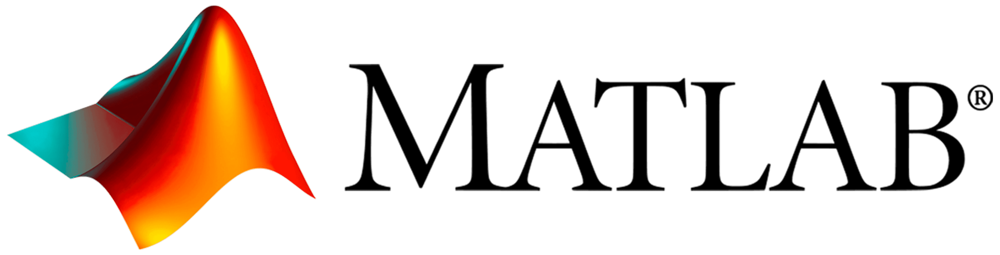

Project Overview
NavFusion delivers continuous, high-fidelity localization for autonomous systems by correcting inertial sensor drift in real-time when GNSS signals are denied, spoofed, or unavailable.
The Challenge & Our Solution
Widespread reliance on GNSS for navigation presents a critical single point of failure. In urban canyons, tunnels, or contested environments, signal loss is inevitable. While low-cost MEMS IMUs offer an alternative, they suffer from compounding error, or 'drift', rendering them unreliable for long-duration missions.
Our project bridges this capability gap. By fusing data from a cost-effective IMU with a sophisticated AI model (PSO-LSTM), NavFusion learns to predict and correct inertial drift. The result is a robust, edge-deployable system that maintains positional awareness, turning an inexpensive sensor into a high-performance navigation solution.

Visual Placeholder: Trajectory Drift vs. AI Correction
System Architecture

A compact, self-powered unit integrating the NVIDIA Jetson, Movella IMU, and u-blox GNSS receiver into a 3D-printed, vehicle-mountable enclosure.

A ROS2-based system featuring a modular pipeline for data ingestion, synchronization, AI-based drift correction (GRU/LSTM), and state estimation.
Technology Stack
